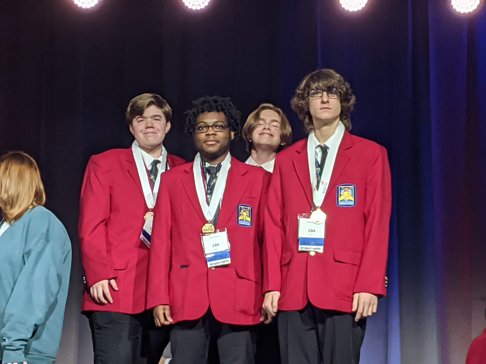

As a student in High School, I have found it useful to prioritize building a small number of general skills
As a leader, I constantly try to understand the needs of the client, and leverage the resources at my disposal to make their goals a reality.
As a learner, I am constantly working to improve myself, taking every criticism into account, and seeking personal growth.
As a communicator, consensus building is my top priority. I work to create professional relationships to last a lifetime, building connections and solving personal and professional problems.
NFTy is a hypothetical NFT marketplace, created as an entry into the SkillsUSA Entrepreneurship Contest. I served as the teams Project Manager, and have been instrumental to the success of the project, which has advanced to the National Competition.
